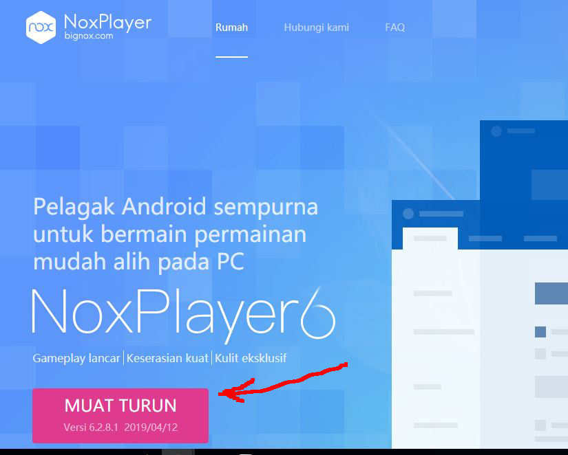
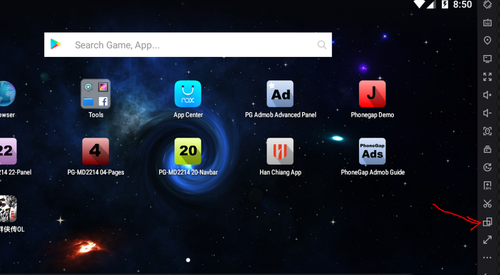
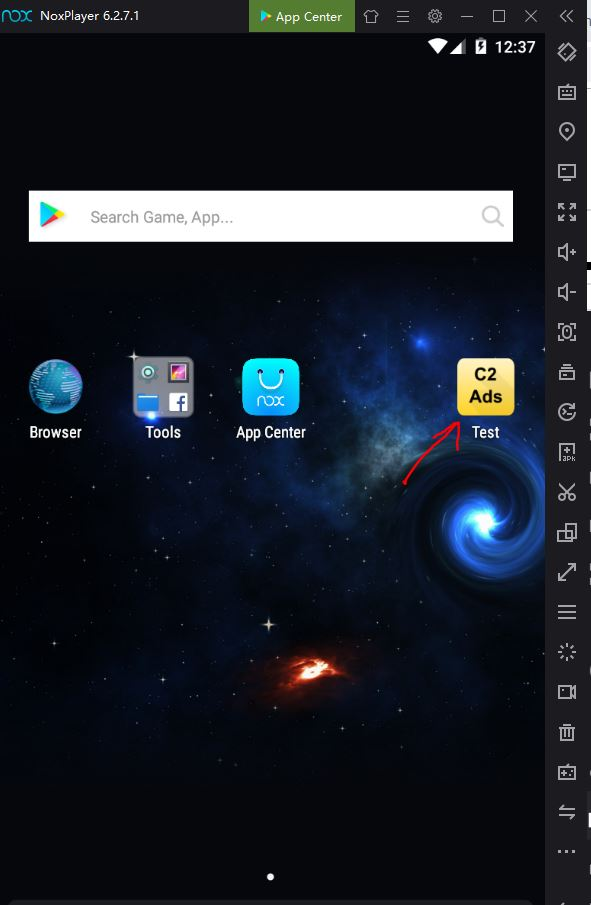
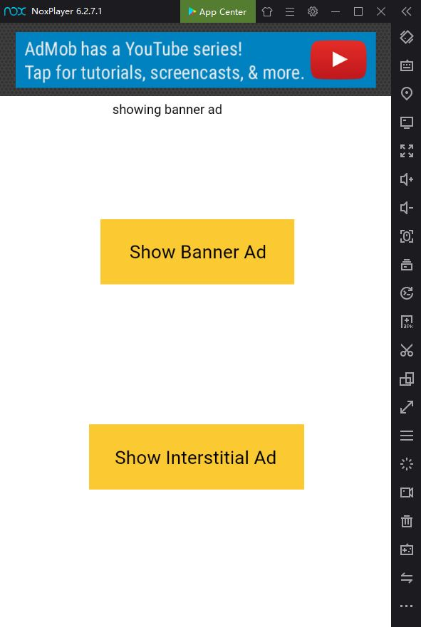
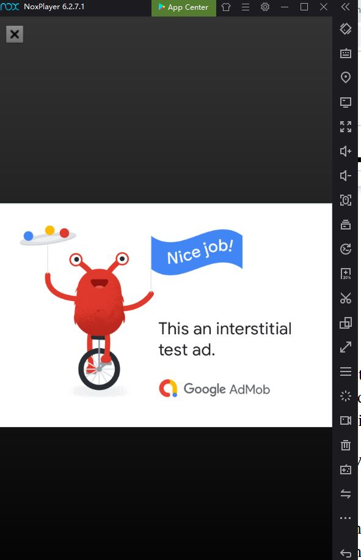
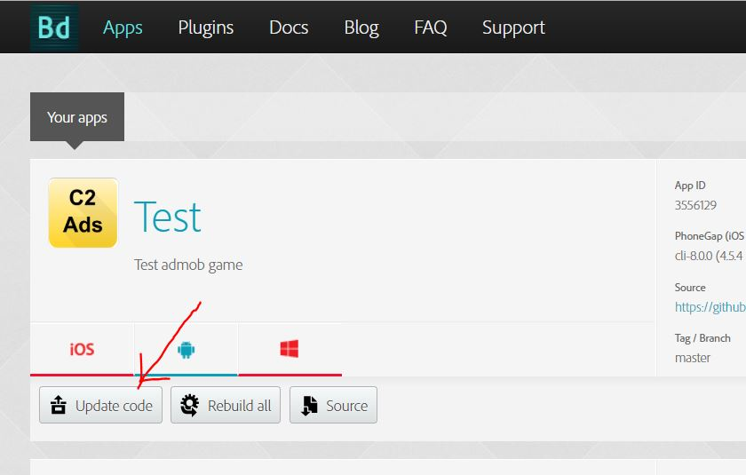
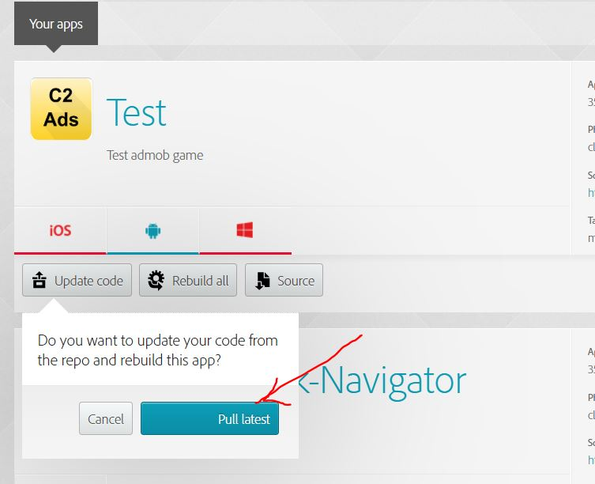

In this chapter, we will learn how to download and install an Android emulator called Nox Player, and how to transfer and install our apk files on it. Note that there are other alternatives to using an Android emulator. For example, you could use bluetooth or USB to transfer apk files to your physical Android phone.
Nox player is an Android virtual machine. It behaves exactly like a physical android device. Therefore, if your app can be installed and run on Nox player, this means that it will also be able to be installed on and run on your real physical android phone.
Head over to my.bignox.com and click on the pink button which says ‘Muat Turun’ as shown in Fig 9-1 below. The words ‘Muat Turun’ is Malay language which means ‘Download’. Don’t worry, although the website is in Malay, the Nox player itself is entirely in English.

After downloading the setup file, just click to install Nox player. Once it has finished installing, you should be able to see the screen as shown in Fig 9-2 below.

Note that the default orientation is landscape. To rotate it to portrait orientation, just click on the change orientation icon on the right panel as indicated by the red arrow as shown in Fig 9-2 above.
To install the apk file onto Nox player, just drag the apk file and drop it on the desktop of the Nox player. That is all! This will cause Nox player to install the apk file. It will only take a few seconds. Upon successful completion of the installation, you will be able to see your new Test app’s icon on the desktop of Nox player as indicated by the red arrow as shown in Fig 9-3 below.

As can be seen from Fig 9-3 above, the Test app icon is on the desktop of Nox player. To run it, just click on the Test app icon. After clicking on the Test app icon, your app will open and you will be able to see something like what is shown in Fig 9-4 below.

As shown in Fg 9-4, your app has 2 buttons. Just click on the button ‘Show Banner Ad’ and it will show a banner ad on top. Now go ahead and click on the Show Interstitial Ad button and you should see Fig 9-5 below.

As these are test ads, you are welcomed to click on them.
Congratulations! You have successfully built, installed and tested your app on a real Android device.
Alternatively, you could also transfer the apk file to your physical Android phone using bluetooth. But you must first enable your phone to allow third-party apks to be installed.
A word of caution. On some machines, sometimes Nox Player will not be able to run certain apps correctly, eg, failing to show pop-up windows etc. In such a case, you should use other alternatives to test your apk files, eg, using bluetooth or USB to transfer the apk files to your physical Android phone.
If you wanted live ads, then just substitute the ad ids with your ids from Admob and also substitute the app-id in config.xml with your rea app-id from admob. Then, in the construct 2 CordovaAdmobFree properties, set Test mode to false.
First, we need to re-upload the edited project to github. To do this, open a cmd terminal and navigate to your Test project folder. Then type this command:
git add .
Note that the last symbol is a dot. And it means all. Also take note that there is a space between add and the dot. Next, type in this command:
git commit -m “update”
The m means message. In this case the message for this version update is ‘update’. Feel free to use other messages. Next, type in this command:
git push
The changes to your Test project will be pushed to github. After uploading your new version to github, head over to build.phonegap.com and click on the button ‘Update code’ as shown by the red arrow in Fig 9-6 below.

After clicking on the above-said button, a pop-up will open to confirm your action. This can be seen in Fig 9-7 below.

As can be seen in Fig 9-7 above, there is a sea-green button called ‘Pull latest’. Just click on it to update the Test project code from github and to rebuild the apk file. After built has completed, download the apk file and transfer to Nox Player and run the app.
Congratulations! You now know how to implement AdMob ads. If you wish to deploy it to Google play, we will need to sign the apk with our keystore. We will be doing this in the next chapter.